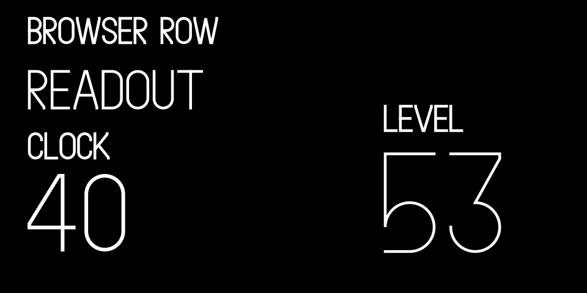
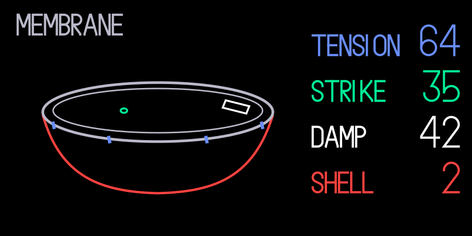
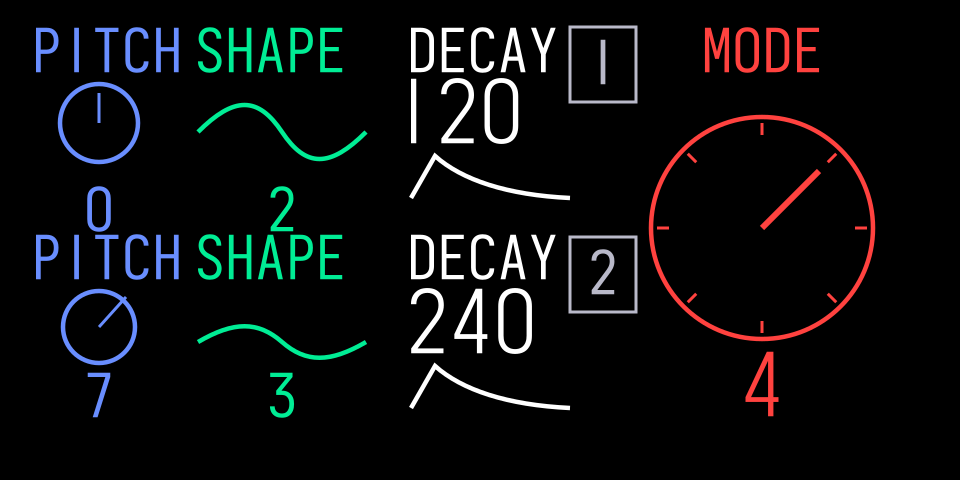
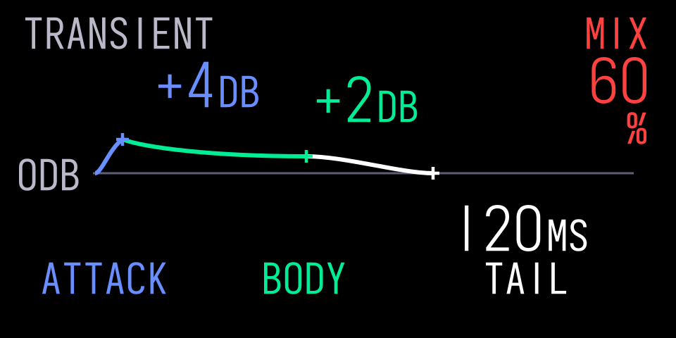

02 / TYPE
Type Follows The Task.

Use stock browser rows, parameter readouts and dominant numbers as references. Choose the scale for the task and leave space for the complete lettering.
A COMMUNITY DESIGN KIT FOR THE ORIGINAL OP-1
Four colours. Clear readouts. One instrument.
A shared starting point for synths, effects and tools that feel at home.
A draft design kit for the original OP-1, made by SquareWave Studio based on community sources and a review of the stock user interface.
Start Building ↗ · Explore The Patterns And Screen Examples ↗
Includes an installable agent skill for Claude Code, Cursor, Pi and OpenCode.



Patterns, Studies And Original Applications ↗ · Screen Families ↗
The patterns lead; the screens illustrate them. Example renders use original artwork and the bundled Iosevka placeholder. No stock font file is included or served. You can read the guide without loading a font.
02 / TYPE

Use stock browser rows, parameter readouts and dominant numbers as references. Choose the scale for the task and leave space for the complete lettering.
03 / CONTROL
Keep each control’s label, value and visual cue connected to its encoder. Retain names and positions so colour is never the only clue.
04 / MOTION
A reel follows transport. A struck skin settles. Keep what makes an instrument understandable, then use retained blocks and bounded updates to control its cost.
Visibility, caches & smooth edges ↗See the kit in a real instrument: GIN.
Made For People.
Readable By Agents.
Give Claude Code, Cursor, Pi or OpenCode the kit’s screen rules, font guidance and original visual examples.
npx skills add squarewave-studio/op1-design-kitRun this in your project, then select op1-design and your coding agent. The Skills CLI pulls directly from this GitHub repo. A skills.sh listing or account is not required.
05 / CREDITS
Thanks to op1hacks, op1r, pcppcp (popcorp) and contributors, Hundekraft and Maiko for publishing their work. Teenage Engineering makes the OP-1.
These tools are free. A tip helps me keep building them.
Buy Me A Coffee ($5) · Buy Me Lunch ($10) · Buy Me Dinner ($20) · Choose Your Own Amount